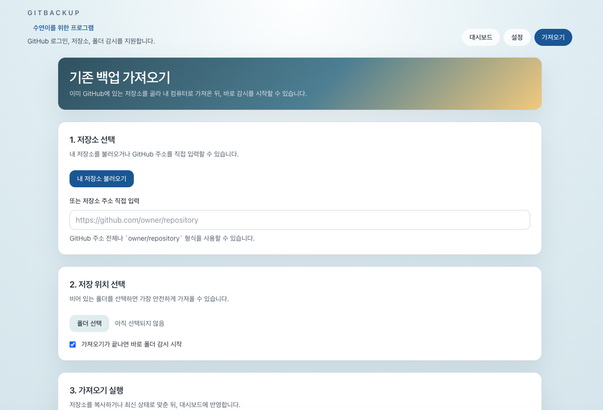
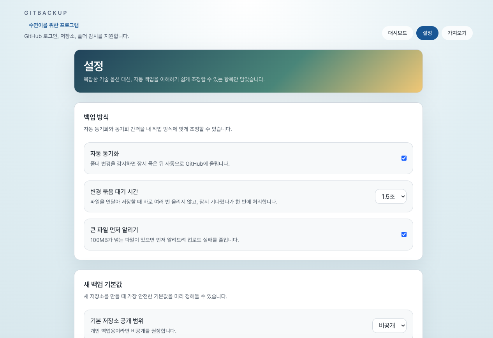

로그인하고 백업할 폴더를 고르면 바로 사용할 수 있습니다.
변경 사항을 자동 감지하거나 직접 즉시 동기화할 수 있습니다.
이미 GitHub에 있는 백업 저장소도 다시 가져와 이어서 관리할 수 있습니다.
강력하지만 단순한 기능
어려운 백업 툴 대신, 누구나 바로 이해할 수 있게
첨부된 제품 화면을 중심으로, 실제 사용 흐름이 보이도록 구성했습니다.
01
실시간 자동 동기화
폴더 변경을 감지한 뒤 자동으로 GitHub에 반영할 수 있어, 수동 복사의 번거로움을 줄여줍니다.
02
3단계 간편 설정
로그인, 폴더 선택, 백업 시작. 복잡한 옵션 대신 필요한 흐름만 남겼습니다.
01—02—03
03
큰 파일 미리 알림
업로드 전에 큰 파일을 먼저 확인해, 혼란과 실패를 줄일 수 있습니다.
04
기존 백업 다시 가져오기
이미 GitHub에 저장해둔 백업 저장소를 내 PC로 다시 가져와 이어서 관리할 수 있습니다.

왜 이 제품이 필요한가요?
수동 복사와 불안한 보관 대신,
수동 복사와 불안한 보관 대신,
든든한 백업 습관
일반 Windows 사용자도 부담 없이 시작할 수 있도록, 화면과 흐름을 최대한 단순하게 만들었습니다.
●
GitHub 로그인 기반
기존 GitHub 계정을 그대로 사용해 저장소와 연결할 수 있습니다.
●
자동과 수동 모두 지원
자동 감시로 편하게 쓰거나, 필요할 때 지금 동기화를 실행할 수 있습니다.
●
실제 작업 폴더 중심
문서, 개인 작업물, 프로젝트 폴더처럼 자주 바뀌는 파일 관리에 잘 맞습니다.
01
GitHub 로그인
사용 중인 GitHub 계정으로 로그인하고 저장소를 연결합니다.
02
백업 폴더 선택
백업하고 싶은 Windows 폴더를 고르면 준비가 끝납니다.
03
자동 동기화 시작
이후에는 감시 시작 또는 지금 동기화 버튼으로 백업을 이어갈 수 있습니다.
실제 화면
앱을 열면 이런 흐름으로 사용할 수 있습니다
메인, 설정, 가져오기 화면을 제품 홍보형 레이아웃으로 다시 정리했습니다.
Dashboard
백업 상태와 작업 버튼을 한 번에
현재 로그인된 계정, 연결된 저장소, 동기화 버튼, 최근 상태를 한눈에 확인할 수 있습니다.
Settings
설정도 어렵지 않게
자동 동기화, 대기 시간, 공개 범위 같은 옵션을 이해하기 쉬운 화면으로 조정할 수 있습니다.

Import
기존 백업도 쉽게 다시 연결
내 저장소를 불러오거나 주소를 입력해, 이미 백업된 내용을 로컬에 가져올 수 있습니다.
FAQ
자주 묻는 질문
Git을 잘 몰라도 사용할 수 있나요?
네. Git 명령을 직접 입력하는 대신, 로그인과 버튼 중심으로 흐름을 구성해 일반 사용자도 이해하기 쉽게 만들었습니다.
GitHub 계정이 꼭 필요한가요?
네. GitBackup은 GitHub 저장소를 기반으로 파일을 보관하므로 GitHub 계정이 필요합니다.
어떤 사람에게 잘 맞나요?
문서, 작업 파일, 개인 프로젝트 폴더를 쉽고 빠르게 백업하고 싶은 Windows 사용자에게 잘 맞습니다.
지금 바로 안전한 백업 습관을 시작하세요
복잡한 명령 없이, 로그인하고 폴더를 선택하면 GitBackup으로 파일 백업을 시작할 수 있습니다.
Windows용 다운로드 GitHub Releases · Windows 10/11 지원